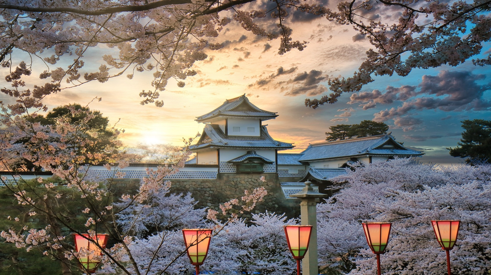

Kanazawa – Garden & Samurai Districts
Home to Kenrokuen Garden, one of Japan’s most celebrated landscape gardens, and preserved samurai and teahouse districts.
- Region: Ishikawa Prefectur
- Best Time: Spring blossoms & autumn colors
- Don’t miss: Kenrokuen, Higashi Chaya District